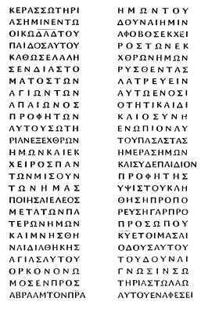
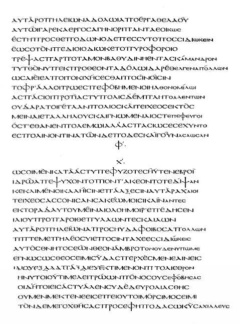
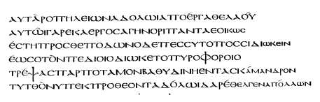

William Cureton, Introduction to The Festal Letters of Athanasius (1848)
THE
FESTAL LETTERS
OF
ATHANASIUS,
DISCOVERED
IN AN ANCIENT SYRIAC VERSION,
AND EDITED BY
WILLIAM CURETON, M.A. F.R.S.
CHAPLAIN IN ORDINARY TO THE QUEEN;
ASSISTANT KEEPER OF MANUSCRIPTS IN THE BRITISH MUSEUM.
LONDON.
PRINTED FOR THE SOCIETY FOR THE PUBLICATION OF ORIENTAL TEXTS.
SOLD BY
JAMES MADDEN & Co. 8, LEADENHALL STREET.
MDCCCXLVIII.
TO HIS GRACE
MY LORD DUKE,
I HAVE not requested permission to dedicate this volume to your Grace merely for the personal gratification of enjoying the honour which such permission from one of your high character and rank must confer,----but rather that I may have an opportunity of publicly acknowledging my own obligations, and of making known to others how far their gratitude also is clue to your Grace's exertions.
Your name stood at the head of the subscription to promote the first literary mission into Egypt in the year 1838, and your Grace further encouraged and supported it by your personal interest and influence.
An interval of nearly ten years had not diminished your zeal in the same good cause, and your Grace was again the first, in 1847, to make those efficient exertions which have been successful in obtaining for the British nation the last remaining portion of the ancient library of the Syrian Convent in the valley of the Natron Lakes.
The acquisition of these inestimable volumes, of such venerable antiquity, has conferred a literary honour upon Great Britain, which even persons | unacquainted with their contents can sufficiently estimate to feel indebted to those who have been chiefly instrumental in securing for our own country this unrivalled distinction.
For myself, having examined these volumes, almost leaf by leaf and page by page, I am so deeply impressed with the conviction of their extreme importance, not merely for the objects of literature, but further, for the sacred cause of truth, of their theological as well as their historical and philological value, that I cannot adequately express my own gratitude to one, to whom we are all so much indebted for their acquisition as we are to your Grace.
May the time be not far distant, when more encouragement held out to these severe and difficult studies----which indeed require a fostering hand to protect them till they ripen to maturity----shall, engage many other labourers in this field of inquiry; and, consequently, excite in many others the same sense of obligation to your Grace as I myself entertain.
I have the honour to be,
MY LORD DUKE,
Your Grace's most obedient Servant,
WILLIAM CURETON.
BRITISH MUSEUM,
March 1, 1848.
MORE than twenty months have passed since I announced my intention of publishing the Text of a portion of the Syriac version of the long-lost Festal Letters of St. Athanasius, which I had discovered; and of adding, at the same time, an English translation, and such notes and illustrations as I might deem requisite. At the time that I made this announcement the text was already printed, and I only waited for the leisure necessary to enable me to complete my task.
In the meanwhile, the whole of the impression of the Syriac version of St. Ignatius having been exhausted, and great demand having been made for a new edition, both in England and on the Continent, I have found it necessary to devote all the time which I could command to prepare and carry through the press, not so much a new edition, as an entirely new work on the subject of the Ignatian Epistles. As this time can at most amount to no more than a very few hours in each week, and even these few hours stolen from those which ought justly to be dedicated to repose and relaxation after the daily labours of my official duties, I feel that I have some claim to the indulgence of the learned if I be more tardy in accomplishing what 1 have promised than my announcement may have led them to expect, or my own zeal have | anticipated. In the case of these Festal Letters of St. Athanasius this delay has been attended with advantage, for I am now able to give to the world, not only a greater number of these Epistles of the great champion of orthodoxy, but also to exhibit in a perfect state several which previously were mutilated and incomplete.
As the text of these letters alone now forms not an inconsiderable volume, I have been unwilling to withhold them from the learned for the long and indefinite period which, with my present occupation and engagements, must elapse before I could venture to hope for sufficient leisure to complete the translation, and to make the researches which would be necessary to enable me to add such notes as I intended to accompany the work. In some other country, perhaps, where this branch of literature is more encouraged, and consequently better cultivated and understood, some scholar may be found who will be ready to undertake the task of presenting these Letters to the public in an European dress, before I can find the leisure requisite to do so. He will have my full concurrence and my best wishes, It will be no mean honour for him to be the first, after the lapse of centuries, to offer to the theologians of Europe the Letters in which St. Athanasius, through a series of succeeding years, exhibited to those under his spiritual superintendence a notification of the day on which they were to celebrate the annual commemoration of the Resurrection of our Lord. I shall be content to have extracted the ore from the mine, to be wrought and polished by another.
But that my book may not in the meanwhile be altogether useless, and without, interest to such as have not directed their attention to the same branches of study as myself. I have given in my Preface a statement of the exact day, both | according to the Roman and Egyptian months, upon which Easter was celebrated, as indicated by Athanasius, during the whole period of his patriarchate; and I have added such other chronological or historical facts, supplied by these Epistles, as seemed to me to be most deserving of notice.
With regard to the text, I have endeavoured to exhibit it in every respect as I found it. Having but one manuscript, I have felt it to be my duty to alter nothing, but to present even the obvious errors of the transcriber exactly as they occur. This is one reason why I more particularly regret publishing the text without a translation; and without notes in which I might have pointed out such mistakes as evidently belong to the copyist, while I now run the risk of having them attributed to myself. Even with all the care and pains that I could bestow, I find that some errors of my own have been committed;----Indeed, the state of this copy, which, among the hundreds of Syriac manuscripts that have passed through my hands, is certainly the most difficult to read of any that I ever saw, would render it not unpardonable were they more numerous;----but nevertheless, I am unwilling to have those errors laid to my charge which I certainly have not committed.
I have elsewhere observed, that nothing can be more irregular, in the generality of manuscripts, than the orthography of Greek words adopted into the Syriac, and of the foreign names of persons and places exhibited in that language. I have seen no manuscript which afforded more examples of this abundant and extreme irregularity than that from which I have copied these Letters of Athanasius.
If the part of this volume first printed prove to be more correct than the other, it is due to Dr. Lee, Regius Professor of Hebrew at, the University of Cambridge, and to Professor | Tullberg of Upsala*, both of whom kindly read the proof-sheets as they passed through the Press. To both I beg to offer my very sincere thanks.
It is also my gratifying duty to express the great obligations I am under to the Committee of the Society for the Publication of Oriental Texts for defraying the expense of printing this volume.
* The liberality of the Swedish Government has twice supplied Dr. Tullberg with the means of visiting this country for the purpose of extending his researches in Oriental literature. Upon the last occasion he has drawn largely from our treasures of Syriac lore. His own zeal, animated by national encouragement, affords us good ground to hope that no long period will intervene, before the learned of Europe generally will derive much advantage from his last visit to England.
I.
AMONG numerous other remains of some of the most eminent writers of the early Christian Church, which, having long been supposed to have perished, I have discovered still to exist in the literature of the East, the work which I now give to the public would merit the full attention of theologians, even were it only the celebrity of the author that gave it a title to demand their consideration. Some interest, therefore, will naturally be felt, upon its being now brought to light for the first time after the lapse of centuries, to learn how and where it was discovered. I will endeavour to satisfy any curiosity which may arise on this head in a few words.
When Dr. Tattam, now Archdeacon of Bedford, returned from Egypt in the year 1842 1, having so successfully accomplished the object of the mission with which he had been entrusted by Her Majesty's Government, the inestimable treasures of Syriac literature which he had been fortunate enough to obtain were delivered to the Trustees of the British Museum, and deposited in our National Library. In the course of official duties, the task of classifying the volumes, of gathering together, collating, and arranging the numberless fragments and loose leaves of which this |ii collection consisted, and of drawing up a summary of their contents, devolved upon me. At the first sight of such an immense mass of broken, scattered, and confused materials, the labour appeared to be enormous; and I almost shrank from the task as one too great for me to hope to accomplish within the utmost limit of that portion of my life which I could wish to pass in this kind of occupation. But a warm zeal in the cause which I had in hand, strengthened and encouraged by the satisfaction of having had the expectation 2 which I had entertained, even while they were in the desert, of seeing and handling these precious volumes thus realized, the delight of becoming acquainted with their contents, and the hope of obtaining leisure at some subsequent period to open their stores to others, tended much to lighten the labour, and enabled me almost to complete the task much sooner than I could have ventured to anticipate.
Among other works which time and neglect had rendered |iii imperfect, and left but fragments only of them remaining, I discovered a portion of the Festal Letters of St. Athanasius. The volume to which these fragments belonged had originally been composed of a number of quires, each consisting of five pieces of vellum of folio size, laid one upon the other, and then folded and sewed together, so as to form ten quarto leaves, or twenty pages. At the bottom of the first and last page of every quire was a letter, indicating its numerical order in the arrangement of the volume. The portions of the book which I found were, the last leaf of the first quire, marked # the eight middle leaves of another, which I have since ascertained to be the fourth quire, the first and last leaves of the fifth, marked #, and the whole of the sixth and seventh quires, with the numeral signatures # and #. In these were comprised a portion of the Introduction, the last part of the sixth and the first part of the seventh, together with a part of the tenth and eleventh, the whole of the twelfth, thirteenth, fourteenth, seventeenth, eighteenth, and nineteenth Letters, and the first part of the twentieth. The fifteenth and sixteenth had been already lost before the Epistles were collected together into one volume.3
Delighted at having recovered so much of a long series of Official Letters by one of the most celebrated Bishops of Christian antiquity, whose genius has exercised an influence upon the Church for fifteen centuries, whose zeal and sufferings for the orthodox faith, and the stirring circumstances of the period at which he lived, must give an interest to every genuine line that has proceeded from his pen, I resolved at once to transcribe, translate, and publish the contents of these fragments, and to add also a few passages from other |iv of his Festal Letters, which, in the course of my reading, I had observed cited by other authors, whose works were contained in the collection of Syriac manuscripts then in my hands. The transcript was made at such intervals of leisure as I could command; and the text was committed to type in the spring of the year 1846.
The part of the present volume printed at that time is comprised in the pages noted with Syriac numerals. The first fifty embrace the contents of the fragments of the manuscript in which the collection of the Festal Letters had been comprised. The remaining four pages contain extracts from the twenty-seventh, twenty-ninth, and forty-fourth Epistles, cited by Severus 4 in his work against Grammaticus; and also the celebrated passage from the thirty-ninth Letter, exhibiting a list of the Canonical Books of Scripture which has been preserved in the Greek, as cited by Theodoras Balsamon.5 The Syriac version of this I have copied from an anonymous Commentary on the Scriptures. 6
At the time when this portion of the volume was printed I did not venture to cherish the hope of ever recovering any other parts of the manuscript to which the fragments then in my hands belonged. I believed that the entire Syriac library of the monks of the Convent of St. Mary Deipara had been removed; nor did I suppose that these precious relicks of the ancient learning of the Oriental Churches, which I was arranging with affectionate and reverential care in the British metropolis, had left others of their fellows, not less venerable, and equally precious, in the same degraded and neglected |v condition as they had occupied for centuries, in a miserable cell in one of the most lonely deserts of the world. So eminently successful had Dr. Tattam's expedition been, that I could not hope for any more success; and so abundant were the treasures with which he returned, that I naturally concluded the mine to be exhausted. The event has proved this conclusion to have been ill founded; for although Dr. Tattam's agreement with the monks embraced the whole of their collection, they nevertheless concealed and withheld a large portion of their library. This, however, only kept back for a time the rest, of the manuscripts; and the delay has redounded both to the honour of the Trustees of the British Museum, by giving them an additional opportunity of exerting themselves for the advantage of the Institution over which they preside, and likewise to the great credit of the actual Lords of her Majesty's Treasury, by affording them also an occasion of shewing their generosity in so good a cause, and of thus being placed upon an equality with their official predecessors, who had liberally furnished the means of acquiring for the British nation the first importation of this inestimable collection of ancient manuscripts, which now forms a most distinguished portion of our National Library, and has rendered it, in this class of literature, unrivalled in all the world.
I avail myself of this as a favourable occasion to record, in a few words, the manner in which the remaining part of this library was rescued from the obscurity of a cell in the monastery of the lonely valley of Nitria, and found a more suitable habitation in the British Museum.
Early in the year 1845 M. Auguste Pacho, a native of Alexandria, and nephew of M. Jean-Raimond Pacho, who has left behind him a considerable reputation by the posthumous |vi publication of his travels in Africa 7, made a visit to London, in the hope of obtaining some confidential employment, for which his intimate knowledge of oriental manners and customs, his native acquaintance with the Arabic tongue, and with several European languages, rendered him admirably qualified. He brought a letter of introduction from M. Reinaud, who at this moment holds the distinguished position of Président de l'Académie des Inscriptions et Belles Lettres of the Institute of France, recommending him to such good offices on my part as I might have any opportunity of affording him; and during his sojourn in London I had the pleasure of meeting him occasionally. After having remained a few months only in this country, M. Pacho was recommended by his medical advisers to seek some milder climate, as the only means of restoring his health, which had been much impaired during his residence in England, and he at once decided to return to his native country, Egypt.
Upon his communicating to me this decision, I thought that a favourable opportunity was hereby presented of endeavouring to obtain additional treasures of literature, which I doubted not might still be lurking in the Egyptian convents, and thus not only to rescue them from obscurity, and perhaps from destruction, but also to add them to the already abundant stores of the Institution to which I have the honour of being attached. I accordingly shewed to M. Pacho the acquisitions which Dr. Tattam had made in Egypt, and entreated him to neglect no opportunity which his residence in that country, and his knowledge of the language and customs of the natives, |vii might afford, to acquire ancient manuscripts; by which he would not. only confer an essential benefit upon literature, but might also, if he were successful, render considerable and material service to himself. With this exhortation, and my best wishes, I bade him farewell.
Once or twice a letter, relative to this matter, had reached me in the course of the year 1846. In the spring of 1847 I was delighted to receive intelligence that he had heard of the existence of a considerable number of Syriac manuscripts, and that he was resolved to use his utmost exertions to endeavour to obtain them. In the month of July another letter brought me the news that he was then in possession of nearly two hundred volumes, with many fragments and loose leaves, which he had succeeded in procuring from the very monastery of St. Mary Deipara, in the Desert of Nitria, from which the manuscripts that he had seen when in London had been obtained; and that they were in fact the remaining part of the collection which had been purchased by Dr. Tattam, that had been concealed and secretly kept back by the Religious Brethren of the Valley of the Ascetics. His letter also stated that he intended to start from Alexandria by the next packet that was to sail for England, and bring the books which he had been so successful in obtaining directly to London. This was indeed a gratifying announcement to me; and I eagerly waited for the arrival of a collection of manuscripts, in which I hoped not only to discover additional treasures, but. also to obtain the means of completing several important works, among those that I had already explored, which I had found to be defective and imperfect.
Another letter, dated from Malta, following a few weeks later, gave me some apprehension. I learnt thereby that M. Pacho, instead of proceeding immediately to England, |viii had determined upon passing through France, and taking Paris in his route; and I was too well acquainted with the zeal of the learned Orientalists of that metropolis, and of the keepers of the Royal Library, not to fear that they might manifest some eagerness to partake in the honour and advantage of possessing a share in one of the most remarkable and important collections of the writings of antiquity which had ever been transported from the east to the west.
This diversion of M. Pacho's journey certainly cost me much anxiety: probably it has also cost Her Majesty's Treasury some additional pounds sterling. Still, however, the result has proved prosperous to all parties. I have been rewarded in having my expectations most amply realized; the Trustees of the British Museum have received a most valuable, and, for them, an inestimable accession to the institution under their direction; the Lords of Her Majesty's Treasury have earned a large and lasting mead of praise for their judicious liberality upon so eminent an occasion; and M. Pacho has had the satisfaction of having rendered an essential service to literature, and a substantial benefit to himself. The manuscripts became the property of the British Nation on Saturday, the 11th of November 1847.
I will add a few words here, to explain how they came into the possession of M. Pacho. After a few months' residence at Cairo, some circumstances transpired, which induced him to believe that good faith had not been kept with Dr. Tattam 8 by the Rais of the monastery and Mohammed, a servant and interpreter, whom, in conjunction with the Shaikh of the village of Beni Salame, on the border of the Nile, he had employed to negociate the purchase of |ix the entire library belonging to the monastery; but that a part of the volumes had been fraudulently retained, although the strongest asseverations had been made that the whole had been delivered up, according to their agreement. With a most laudable intention, M. Pacho determined to ascertain the truth of this matter, and to visit in person the habitation of the ascetics for that purpose. This resolution, being once taken, was soon put into execution; and he shortly afterwards found himself the guest of the monks, shut up in the dismal walls of their dreary abode, and subject to all the inconveniences which their love of filth, or hatred of cleanliness, must necessarily impose.
It now became requisite for him to proceed with the greatest caution, if he wished to ascertain any further tidings respecting the manuscripts. These ascetics of the desert had not dealt uprightly with Dr. Tattam: and they knew that any disclosure respecting the remainder of their library would at the same time also make another disclosure, not very creditable to themselves. Further, their superstitious fears and feelings had been wrought upon; for the very day after they had delivered up the books, and received the payment, they were deprived of the tenure of a tract of land on the borders of the Nile, which they held under the Pasha for the maintenance of their establishment. This loss they looked upon as a punishment sent from heaven; not, indeed, on account of their having transgressed the heavenly laws in their dealings with Dr. Tattam, but on account of their having sold a part, of the library belonging to their monastery; and they began to look forward with some degree of apprehension to the fulfilment of the solemn imprecations denounced by the various donors of the several volumes upon any who should dare to alienate them, or remove them from the monastery---- |x that their names may be blotted out of the Book of Life, and their portion and lot be cast with Pontius Pilate and Judas Iscariot. But these apprehensions shortly after vanished, when another convenient opportunity of obtaining money occurred.
For six weeks M. Pacho remained in the company of these inhabitants of the lonely Valley of the Ascetics; at the end of which period he had so far gained their good will, that they ventured to shew him the remainder of their library, and even to treat with him for the purchase of it. The terms of the bargain were soon concluded.
He now ascertained the extent of the fraud practised upon the former occasion. Dr. Tattam had despatched Mohammed for the purpose of negociating, through the intervention of the above-mentioned Shaikh, the purchase of the library from the monks. He believed that the transaction would be more easily accomplished by means of these Orientals, than if he were to appear in the business himself, especially as he must be compelled at last to rely upon Mohammed, on account of his being unable to speak their language, which prevented him from having any direct communication either with the Shaikh or with the monks themselves. Undoubtedly this proceeding of Dr. Tattam's was the best that could have been adopted, if the honesty of the parties engaged could have been relied upon; and, under the circumstances in which he was placed, it was the only course to which ho could in prudence resort. The bargain was thus concluded for a certain sum to be paid for the entire collection. Dr. Tattam went himself with the money to the village of Beni Salame, whither the books were to be sent, and despatched Mohammed with men and donkeys to convey them across the desert. When he arrived at the monastery the brethren felt some reluctance to give up all |xi their collection: separating therefore, in a hasty and indiscriminate manner, not merely the volumes, but also quires, and even leaves, of the same volume, they divided the books into two heaps, and left it to Mohammed's choice to select which he pleased. At the same time they stipulated that they should receive the whole amount that had been agreed upon, and left it to him to represent to his employer that he had executed his task in obtaining the entire library.
Dr. Tattam, who had inspected the collection during his visit to the monastery in his first excursion into Egypt, upon receiving the portion chosen by Mohammed at once declared his conviction that it did not comprise all the volumes which he had seen; but so strong were the affirmations, both of Mohammed and the Rais who had accompanied him with the books from Nitria to Beni Salame, that he was fain to acquiesce in their assurances. The sum agreed upon for the whole collection was accordingly paid. This amount Mohammed, the Rais, and the Shaikh, divided into two parts: one they distributed amongst themselves, for their own private uses, and the other they sent to the monastery, for the common purposes of the whole religious community. Much disappointment at first was expressed by the Brethren when the Rais returned with only half the amount that they had hoped to receive; but he soon silenced their murmurs by the justice of the observation which he urged upon them----that having themselves kept back half of the volumes, it was unreasonable for them to expect that the purchaser should remit to them more than half the sum which had been agreed upon for the whole collection.
Fully acquainted with the character of the parties with whom he had to deal, M. Pacho proceeded upon his business with all due caution. He superintended in person the |xii packing of the books within the walls of the monastery; he caused every fragment, even the smallest that he could find, to be carefully collected; and, further, he offered a price, varying according to the size, for every quire, leaf, or even remnant of a leaf, which, having been removed from the apartment where the rest of the books had been kept, might be discovered by any of the monks in their own cells, or in any other part of the building. Having thus secured, as he believed, and as it seems most probable, almost every fragment that could still remain, he transported his acquisition across the desert to the Nile, and appointed Cairo as the place whither the Brethren were to meet him and receive payment for their books.
Part of the amount agreed upon was paid to them as soon as they arrived; but M. Pacho still withheld for a time the remaining part, till he should receive ample assurance that the whole of the Syriac manuscripts belonging to their library had been given up to him according to their agreement, and that none had been concealed and retained. He justified this method of proceeding to the monks who waited upon him for payment by alleging their previous conduct with respect to Dr. Tattam; and when at length, after some delay, he found that no more books were produced, he concluded that he had indeed obtained the whole of the remaining part of their library, since the anxiety evinced by the good Brethren to obtain the money was ineffectual to discover even any additional fragments.
Before he ultimately delivered the whole of the amount into their hands, he required them to sign a document, in which they affirmed that they had sold to him all their Syriac manuscripts; and that if any should be discovered in their monastery, or elsewhere in their possession, at any period |xiii subsequent to the date thereof, they were to become at once the property of M. Pacho, or of those to whom he should have transferred his right in this matter. Further, to be still more secure, he required the Superior to publish a sentence of excommunication against any one of the Brethren who should have withholden any part of this Syriac collection, and did not immediately deliver it over to the person to whom they had consigned all their interest in these manuscripts. He had perhaps discovered, during his residence among the monks, that this latter precaution was not altogether needless. One of them, who had concealed a part of a book, was terrified by this denunciation, and forwarded it afterwards to M. Pacho in time for him to receive it just before he left Egypt.
Before quitting Cairo he received a visit from the above-mentioned Mohammed, who confessed to him that he had left behind in the monastery a portion of the library, when he was in the employment of Dr. Tattam, and stated that he should be happy to devote his services to endeavour to obtain for him the remainder of the volumes, if he had any wish to procure them. M. Pacho gave him the best proof that he had no need of such services, by taking him into the next room, and shewing him the books already in his possession.
The manuscripts left the convent on the 31st of July, were shipped at Alexandria in the Oriental Steam Navigation Company's vessel "Indus" on the 10th of September, and ultimately reached London on the 12th of October.
The day after their arrival I went to inspect them. At the first view 1 could almost have imagined that the same portion of the library as had been brought, nearly five years previously, by Dr. Tattam, was again before me in the same condition as I found it when the books were first taken from the cases in which they had been packed, as if the volumes |xiv had been stripped by magic of their Russia, and clad in their original wooden binding; and the loose leaves and fragments which had cost me many a toilsome day to collect and arrange, had been again torn asunder, and scattered in almost endless confusion.
I found the collection to consist of a considerable number of volumes, and a large quantity of disjointed quires and separate leaves. Among the latter of these I immediately perceived several additional parts of the book of the Festal Letters of Athanasius. As it was then uncertain whether this portion of the library of the monks of Nitria would be added to that which already belonged to the British nation, or would be transferred to some other country, I requested M. Pacho to allow me to take a copy of such of these Letters as were found among the manuscripts in his possession, in order that I might add them to those which had been already printed, and thus give the whole of them to the public together. To this request he at once assented, and permitted me to carry them away with me to my own house. This was in two ways advantageous to me. It gave me the means of rendering my work as complete as all the known materials would admit, without the necessity of making a journey into another country, should he ultimately have determined upon removing his collection of manuscripts from this; and at any rate, even although the volumes should be deposited with the rest in the British Museum, it enabled me to make the transcript at once, and publish my book, which I otherwise could not have effected for several months later, till the advance of summer should leave me some hours of daylight after the period of my official duties, to make the copy within the precincts of the British Museum.
The parts of the volume which I found among M. Pacho's manuscripts were, the first quire, except the last leaf, the |xv whole of the second and third quires marked #, #, the first and last leaves of the fourth #, and the six middle leaves of the fifth quire. In these were contained the Introduction, the five first Epistles and parts of the sixth, seventh, tenth, and eleventh, occupying those fifty-six pages of the present volume which are not numbered with the Syriac numerals.
II.
It would be foreign to the subject which I have before me to enter at present into any further account respecting the rest of this collection. I hope to do this upon another occasion. But nevertheless I have found amongst them one fragment and one volume, each so remarkable, that the interest attached to them will, I am sure, secure for me the reader's indulgence, even should it appear somewhat out of place to mention them here.
Those who have been at the trouble to read an article in the hundred and fifty-third Number of the Quarterly Review, headed "British Museum----Manuscripts from the Egyptian Monasteries," will probably remember that the honour of having been the first of our own countrymen to bring to light any of the literary treasures of the Syrian convent belongs to the present Duke of Northumberland, who, in the year 1828, undertook a journey across the Egyptian desert to the lonely valley of Nitria, for the express purpose of endeavouring to procure a copy of a Coptic and Arabic Dictionary, which he had understood was to be found there, in order to assist Dr. Tattam in his lexicographical labours.
Nor will they have forgotten the interesting account furnished by the Hon. Robert Curzon, Jun., of his visit to the same convent in the year 1837, in which he states his regret at having been compelled to leave behind him a large |xvi imperfect quarto volume, which he recognised again a few years afterwards in my hands in the British Museum. This Manuscript, with forty-eight others, was obtained by Dr. Tattam in his first excursion into Egypt, and brought to England in 1839. It is already famous among the learned in Europe as containing a Syriac version of the Theophania of Eusebius, the original text of which has been lost for ages; but the work is now made accessible to all by the labours of Dr. Samuel Lee, to whom we are indebted for an edition of the Syriac Text,9 and likewise for a learned translation. This same precious volume contains also the work called the Recognitions of St. Clement; the Treatise of Titus, Bishop of Bostra or Bozra, in Arabia, against the Manicheans; the Book of Eusebius upon the Martyrs of Palestine, and his Oration in praise of the Martyrs. The proximity of the time at which this manuscript was transcribed to the period when the two last-mentioned authors lived, within about seventy years of the date assigned to the death of Eusebius, and about forty years of that of Titus of Bostra,10 must of itself necessarily give great importance to a transcript of these works, following so soon upon the time when they were composed. I believe there is no copy in existence of any other work of such antiquity which has been transcribed so near to the date of its original |xvii composition. Its value is enhanced still more by the fact, that the work of Titus, of which a considerable portion has been lost in the original Greek, is found here complete;11 while that on the Martyrs of Palestine is exhibited in a more extended, and, I believe, in a more authentic state, than in the edition of the Greek which is usually inserted in the eighth book of the Ecclesiastical History of Eusebius.12
The original Greek text of the Recognitions of Clement has been lost; but there exists a Latin version made by Rufinus, presbyter of Aquileia. In his Preface he tells us that he had found it expedient to omit several passages which he did not perfectly comprehend:13 his translation, consequently, cannot be understood to be an exact counterpart of the work. It is, |xviii therefore, highly interesting to have now another translation before us, in which we have no ground to suppose that a similar liberty has been taken with the original text. I cannot, in this place, make any attempt to determine the period at which this Syriac version was made. It is probably anterior to the Latin, and this very copy of it was certainly transcribed within about twelve years 14 of the time when Rufinus completed his task. 1 have stated so much, in order to give the reader a notion of the literary, historical, and theological value of the contents of this most precious volume, independently of any of the external circumstances connected with its history.
When Dr. Lee published his edition of the Syriac Text of the Theophania, he expressed an opinion "that the manuscript was probably not less than a thousand years old." He had not at that time discovered a transcript of a note of the date on the margin of one of the leaves in the body of the volume, which assigned to it the antiquity of nearly five additional centuries. This he afterwards found, and inserted it in the preface to his translation of the work, which appeared two years later. He confesses that "he was once inclined to think that the manuscript could not be so old as this date made it, from the appearance of the manuscript, and from some other considerations;" but after having examined the arguments on both sides, he ultimately acquiesces in the genuineness of the transcript of the note recording the date, and consequently in the antiquity which it attributed to the volume. |xix
This book had been entrusted by Dr. Tattam to Professor Lee, for the purpose of enabling him to publish the Theophania, soon after his first return from Egypt; and when the other volumes were delivered up to the Trustees of the British Museum, it was still allowed to remain in the hands of the learned Professor, till he should have completed the important task upon which he was engaged. I did not, therefore, become acquainted with this manuscript until my experience, from having carefully examined and compared the rest, enabled me, from an inspection of the vellum, the colour of the ink, and the character of the writing, to form a tolerably accurate notion of its probable age. I had at that time in my hands a great number of volumes, written at different places and by various scribes, exhibiting a series of about sixty dated manuscripts,reaching from A.D. 1292 15 up to A.D. 464,16 of which twelve had been transcribed in the sixth century, the first in A.D.509, the last A.D. 600. I had thus ample means, in the comparison of those which bore the record of their age, to form an estimate of the relative antiquity of such as had not been dated, or of which the note of their date had been lost. Even a slight examination of this volume convinced me that it was the earliest that I had ever seen, and that I could not attribute to it an antiquity of less than about fifty or sixty years before the earliest dated manuscript, that I had found in the whole collection. This would assign its transcription to about A.D. 414, or 404; a period so near to the time fixed by the note found in the margin that I could not for a moment question either its genuineness or its accuracy.
I transcribe here this note as it is read on the margin |xx of one of the leaves of that part of the volume which contains Eusebius' Treatise on the Martyrs of Palestine, fol. 238. b.
[Syriac omitted]
"Behold, my brethren, if it should happen that the end of this ancient book should be torn off and lost, together with the writer's subscription and termination, it was written at the end of it thus: viz. that this book was written at Orrhoa 17, a city of Mesopotamia., by the hands of a man named Jacob, in the year seven hundred and twenty-three in the month Tishrin the Latter it was completed. And agreeably to what was written there, I have written also here, without addition. And what is here, I wrote in the year one thousand and three hundred and ninety-eight of the era of the Greeks."
These dates, reduced to our era, give A.D. 411 for the time of the transcription of the volume, and A.D. 1086 for that of the note. I have not at this moment the means of ascertaining the name of the person to whom we are indebted for having taken this precaution to preserve the record of the date of this beautiful book, which, being at that time six hundred and seventy-five years old, certainly deserved, even then, to be considered an "ancient book." I think, however, that it is not improbable that I may be able hereafter to identify the handwriting with some other more distinct |xxi notices found among the volumes of this collection, and thus find the means of ascertaining to whom this is due.
The fact of his having made this note at all seems to imply, that, even at that early period, the books belonging to the monastery of the Syrians were already beginning to fall into a state of neglect; and that, from the want of due care being taken to bind and repair them, the first and last leaves, or even quires of some of them, had already been lost. At a subsequent period this neglect became truly deplorable. In the whole collection now in the British Museum, containing portions of considerably more than a thousand distinct volumes, certainly not fifty were found in a complete state upon their arrival; although much labour has subsequently succeeded in collecting and arranging the disjointed and scattered parts of many more.
Among those which had suffered was the inestimable volume of which I am now speaking. The end of it, as the writer anticipated, had been torn off, and the record of the date of its transcription lost. When Dr. Lee deposited the volume in the British Museum in 1843, I immediately began to search among the loose leaves and fragments of that portion of the library which Dr. Tattam had obtained during his second excursion into Egypt, in the hope that I might perchance be able to discover "the end of that ancient book which had been torn off and lost." Although disappointed in this hope, I had nevertheless the satisfaction of finding a considerable part of two additional leaves of this manuscript, of which indeed every fragment is precious.
When I first had the gratification of examining that portion of the library of the Nitrian monastery which arrived in England in 1847, I immediately recognised numerous fragments of volumes which were familiar to me; and not more |xxii than a few minutes passed before I had the pleasure of finding one entire leaf, and soon afterwards another, belonging to that precious book, the peculiarity of whose features were so deeply impressed upon my mind. This second leaf was not only complete in itself, but had also attached to it a small fragment of the corresponding leaf in the same quire, both of which had been formed of one piece of vellum, of folio size, folded into quarto. The back of this fragment I observed had been left blank: I thus ascertained that it must have belonged to the last page of the volume; and consequently to that which had contained the original subscription of Jacob, the scribe of Orrhoa. I now felt that I might even venture to indulge the hope of finding the very subscription itself; and I anxiously looked forward to the time when I should have an opportunity of opening and examining at leisure about twenty small bundles, which were pointed out to me as containing fragments only of leaves, which had been swept from the floor of the room in which the manuscripts had reposed for ages. Not .many days later, when these, with the rest of the collection, were transferred to the British Museum, this opportunity was afforded me. One by one I untied the bundles, and diligently and eagerly examined their contents. As I opened the fourth I was delighted at recognising two pieces belonging to one of the leaves of this precious book: in the next I found a third. And now, Reader, if thou hast any love for the records of antiquity; if thou feelest any kindred enthusiasm in such pursuits as these; if thou hast ever known the satisfaction of having a dim expectation gradually brightened into reality, and an anxious research rewarded with success----things that but rarely happen to us in this world of disappointment----I leave it to thine own imagination to paint the sensations which I experienced at that |xxiii moment when the loosing of the cord of the seventh bundle disclosed to my sight a small fragment of beautiful vellum, in a well-known hand, upon which I read the following words:
[Syriac omitted]
"There are completed in this volume three books----Titus, and Clement, and He of Caesarea.
"Glory to the Father, and to the Son, and to the Holy Ghost, now and at all times, and for ever. Amen and Amen.
"This volume was completed in the month Tishrin the Latter, in the year seven hundred and twenty-three, at Orrhoa, a city of Mesopotamia, * * * * * * "
No more, indeed, of this inscription remains; but this was enough to repay me for the labour of my research, and to confirm and verify the facts connected with it.
The first of these sentences is written in red, the second in yellow, and the third in black.
Among all the curiosities of literature, I know of none more remarkable than the fate of this matchless volume. Written in the country which was the birth-place of Abraham the Father of the Faithful, and the city whose king was the first sovereign that embraced Christianity18, in the year of |xxiv our Lord 411, it was, at a subsequent period, transported to the Valley of the Ascetics in Egypt, probably in A.D. 931, when two hundred and fifty volumes were collected by Moses of Nisibis during a visit to Bagdad19, and presented by him, |xxv upon his return, to the monastery of St. Mary Deipara, over which he presided.
In A.D. 1086 some person, with careful foresight, fearing lest the memorial of the transcription of so valuable, beautiful, and, even at that remote period, so "ancient a book," should be lost, in order to secure its preservation took the precaution to copy it into the body of the volume. At how much earlier a period the fears which he had anticipated became realized I have no means of ascertaining; but in A.D. 1837 "the end of the volume had been torn off," and in that state, in A.D. 1839, it |xxvi was transferred from the solitude of the African desert to the most frequented city in the world. Three years later, two of its fragments followed the volume to England; and in 1847 I had the gratification of recovering almost all that had been lost, and of restoring to its place in this ancient book the transcriber's own record of the termination of his labours, which, after various fortunes, in Asia, Africa, and Europe, has already survived a period of ONE THOUSAND, FOUR HUNDRED, AND THIRTY-SIX YEARS.
One of the first manuscripts that I took up, when I went, to inspect the books in M. Pacho's possession, was a thick octavo volume, which at the first sight I perceived to be a Palimpsest. The traces of a beautiful and ancient Greek |xxvii character under the Syriac were sufficiently apparent; and in some cases it was evident that entire lines, and even pages, with a good light and careful observation, might be read without any very great difficulty. The first word that caught my eye was Teukroj20, at the commencement of a line; and as it was manifest at once, from the arrangement of the lines, that the work was written in verses, a bright gleam of hope immediately flashed across my mind that I might be holding in my hand the most ancient transcript hitherto discovered of a large portion of the noblest poem of Grecian antiquity. A little subsequent examination converted my hope into conviction; and I had the high gratification of reading line after line of the immortal Iliad, emerging from the obscurity of nearly a thousand years, to which some rude and ruthless hand had consigned it, and assuming the character and form with which it had been invested at least three or four centuries before. I found, also, that not this one Greek manuscript only had been erased, to make room for the present contents of the volume, but that two others had also shared the same fate. The work which had been preferred to occupy their place is a Syriac version of the Treatise of Severus of Antioch 21 |xxviii against Grammaticus. The first part of it only is contained in this volume, which ends with these words at the bottom of the first page of the last leaf but one----
[Syriac omitted]
"Here endeth the transcription of the First Division of the second book of my Lord Saint Severus the Patriarch against Grammaticus. Glory to the Father, and to the Son, and to the Holy Ghost, now and at all times, and to all eternity. Amen." On the second page of the same leaf the following note occurs, written by the same hand as the rest of the volume:
[Syriac omitted]
"This book belongs to Daniel, a secular22 presbyter and Saur (Visitor) of the province of Amida, who gave diligence and procured it for the benefit of himself and of those who, possessed with the same object of love of divine instruction, may approach it, and desire to profit their lives by the truth which is in it. But the poor Simeon, presbyter, and a recluse, who is in the holy convent of my Lord Simeon of Cartamin23, transcribed it. May every one, therefore, who asks for it, |xxix that he may read in it, or write from it, for the sake of the love of God, pray for him who gave diligence and obtained it, and for the scribe, that they may find mercy in the day of judgment, like the thief who was on the right hand [of the Cross], through the prayers of all the Saints, and more particularly of the holy and glorious and perpetual Virgin, the Mother of God, Mary. Amen and Amen and Amen."
[Syriac omitted]
On the first page of the last leaf the following notice occurs: "This volume of my Lord Severus belongs to the reverend and holy my Lord Daniel, Bishop of the province of Orrhoa (Edessa), who acquired it from the armour of God, when he was Saur in the province of the city of Amida, for his own benefit, and that of every one who readeth in it. But under the word and curse of God is he whosoever steals it, or hides or removeth it, ***** or tears, or erases, or cuts off this memorial from it, for ever. And through our Lord Jesus may he who readeth in it pray for the same Daniel, that he may find mercy in the day of judgment! Yea, and Amen and Amen.
"And upon the sinner who wrote it may there be mercy in the day of judgment. Amen."
Afterwards there is written, in another hand,
[Syriac omitted] |xxx
"But at the end of his life he bequeathed it to this sacred convent of my Lord Silas, which is in Serug, for the sake of the remembrance of himself, and of the dead belonging to him. May the Lord have mercy upon him in the day of judgment! Amen. Whosoever removeth this volume from this same mentioned convent, may the anger of the Lord overtake him in this world, and in the next, to all eternity. Amen."
Our information respecting the history of the Oriental Churches up to this period is so scanty, that I have no source to which I can turn to enable me to state at once the period when this Daniel was consecrated to the see of Edessa. The catalogue of Bishops of that city preserved in the chronicles of Edessa, published by Assemani, only reaches to the year of the Greeks 1080, A.D. 768 24; and consequently does not include this Daniel, whom the handwriting of this manuscript shews to have lived some time later. It appears to be of the end of the eighth or ninth century; and in all probability the volume formed a part of the collection which was deposited in the monastery of St. Mary Deipara by Moses of Nisibis, the Abbot, when he returned from Bagdad in A.D. 931. This would refer the date of the transcript to the end of the ninth, or the beginning of the tenth century at the latest; and we may therefore safely conclude that about one thousand years must have elapsed since the erasure of the three Greek manuscripts, part of the vellum of each of which furnished the materials for the transcription of this Syriac version of Severus.
At that period the volume consisted of twenty-three quires, each consisting of five quarto leaves of the former books, laid one upon the other, and folded together to form ten octavo leaves. When it arrived in England, the first quire |xxxi had been torn off. I have discovered pieces of three of its leaves among the fragments which had been brought previously to Dr. Tattam. This, together with the nine following quires, contained nearly the whole of the Gospel according to St. Luke. In the next thirteen, comprising one hundred and thirty octavo leaves, or sixty-five of one of the original quarto manuscripts, is contained a part of the Iliad of Homer. The last quire consists of what formerly constituted five quarto leaves of a volume of Euclid.
The present size of one of the leaves of this manuscript is twelve inches long by six and a quarter broad, although it appears that those of the original book which contained the Gospel of St. Luke were rather larger, and that a portion of the margin has been removed, to reduce it to the same dimensions as the rest of the vellum, of which the volume in its present state is comprised. Nearly the whole of this Gospel seems to be comprised in these leaves; but I have not yet had leisure sufficient to examine it, so as to be able to ascertain exactly what are its contents; nor, even were leisure afforded me, would it be an easy task to read accurately the faded letters, till the advance of summer brings a clearer atmosphere and better light.
It is written in large uncial characters, about a quarter of an inch square. The pages are divided into two columns, each about three inches in width, with a space between them of nearly an inch. As usual in manuscripts of this antiquity, there is no separation between the words; and occasionally two or three of the last letters in each line are written in a smaller character. Each page consists of twenty-five lines. As I hope hereafter to be able to publish an accurate collation and facsimile of this very ancient manuscript of the Gospel of St. Luke, it is not necessary that I should enter into any further detail respecting it in this place. I give
|xxxii
however here, as a short specimen, the contents of one page, commencing with Ch.i. v.69. It is printed in columns, in the same number of lines, and with the same quantity of letters in each line, as it is found in the manuscript. The type however bears no resemblance to the characters of the manuscript; and the smaller letters found at the end of some of the lines are not indicated.



The leaves which contain portions of the Iliad are written in a character in many respects similar to that of the Codex Alexandrinus in the British Museum, but larger. The average length of the lines is about seven inches; some of them extend to eight. There are thirty-three lines in each full page. The whole quantity, therefore, amounts to rather more than four thousand verses, and embraces portions of the eleventh, twelfth, thirteenth, fourteenth, twentieth, twenty-first, twenty-second, twenty-third, and twenty-fourth books.
The same remark which I have made above, respecting the Gospel of St. Luke, must apply here. The few leaves which I have collated shew some slight variations from the text of Heyne. The most important that I have observed is the omission of about one line in each page, or one in every thirty-four verses of Heyne's text. I cannot affirm that this is generally the case, but I have found it to be so in four or five instances where I have made the collation.25 The page, however, which I have selected as a specimen presents the converse of this, by adding a line after the tenth of the twenty-second book. I have been guided by no other reason in making the selection of this than by the circumstance of its containing the end of one book and the beginning of another. This specimen is printed in the type copied from the Alexandrian manuscript.26 The letters at the end of the lines in a smaller form are also found in a smaller character in the manuscript. I have added the accents as I have been able to read them at |xxxiv present: there is no doubt, however, that there were others, which have been so effectually erased as to leave now no traces of their existence.
It is my wish to publish the whole of the portions of Homer contained in these leaves, page for page and line for line, in the Alexandrian type, as in the accompanying specimen, and to add a facsimile of several of the most legible pages, for the purposes of illustration of palaeography. The text itself of a manuscript of this great antiquity undoubtedly merits publication, both for the objects of criticism, and as supplying a test of the degree of fidelity with which the Iliad has been handed down by the various scribes during the very long interval between the period when this copy was made and the next earliest manuscript containing the same portions of this work. The papyrus roll in the possession of Mr. Bankes, although supposed to be some centuries older even than the manuscript now before me, contains only six hundred and seventy-eight lines of the last book of the Iliad 27, while the number found in the illustrated fragments 28 of the Ambrosial library at Milan does not amount to eight hundred.29 As those fragments probably do not exceed, if indeed they equal, this palimpsest, in antiquity, while the greater part of them belongs to the earlier books, this manuscript must contain at least about three thousand lines of Homer's poem, transcribed some hundreds of years before any other copy which is now known to exist.
The last ten leaves of this palimpsest, containing a part of the tenth book of Euclid's Elements, belong to a manuscript not quite so ancient as the two preceding. |xxxv
III.
Among the important matters discussed by the assembled bishops of Christendom at the council of Nice was the question respecting the day on which Easter was to be celebrated. This was a subject which had been agitated, not without great and bitter animosity, even from the very infancy of the Church; and Constantine 30, anxious to remove for ever this cause of dissension, referred the matter to the grave deliberation of that first oecumenical council. This question, therefore, having been finally settled by the decision that Easter should be uniformly celebrated upon the first Lord's-day after the Jewish Passover, agreeably to the custom of the Roman and other churches 31, the duty of determining accurately the day on which Easter was to be observed for the whole of Christendom was delegated to the patriarch of Alexandria. To him alone, it appears, this office belonged; nor were the bishops of Rome able to interfere at all in the matter, even although it should be certainly proved that the Alexandrian bishops had made erroneous calculations, and appointed the festival at an improper period. Upon such occasions, therefore, it was necessary for the Roman bishop to appeal to the emperor, and intreat him to admonish the bishop of Alexandria to use more caution in determining the day of Easter, and thus preserve the whole of Christendom from falling into error on this head. Leo the Great 32 furnishes us with an instance of this. |xxxvi
The custom also obtained from the same period in the province of Egypt 33, that, immediately after the festival of Epiphany, the patriarch of Alexandria should send a notification to all the towns and monasteries within his jurisdiction of the day on which they were to commence the fast of Lent, as well as that on which they were to celebrate the festival of |xxxvii Easter. Such was the origin of Festal or Paschal Letters.34 The bearers of these letters, as it appears from Synesius of Cyrene, writing at the commencement of the fourth century, were well received in all places to which they came, supplied with every thing that they needed, and furnished with fresh beasts to continue their journey.
The first Festal or Paschal Letter which was made public after this decision of the council was consequently written by Alexander, bishop of Alexandria, when he returned to his see upon the termination of the deliberations of the bishops who had been assembled at Nice. That he wrote at least one Festal Letter is certain, from the work which I now give to the public. This was for the forty-fourth year of the era of Diocletian, under the consulship of Januarinus and Justus, or A.D. 328 35, when Easter-day was fixed for the sixteenth of the month Pharmuthi of the Egyptian Calendar, or the fourteenth of April of the Roman. He died six days afterwards, on the twenty-second of the same month Pharmuthi, and was succeeded by Athanasius, who was consecrated on the fourteenth of the month Payni following.
The death of Alexander and the elevation of Athanasius |xxxviii have been most generally assigned to the year A.D. 326 36; but the information afforded by the writer of the Introduction to these Festal Letters of Athanasius, as exhibited in this Syriac version, is evidently more authentic and more deserving of credit, both because he appears to have been cotemporary, and because the first Festal Letter of Athanasius, which doubtless he wrote in the year immediately following his election, was for the forty-fifth year of the era of Diocletian, when Constantine Augustus was consul for the eighth time, and Constantine Caesar for the fourth, or A.D. 329.
From the period of his consecration till the time of his death, Athanasius, agreeably to the custom established, continued to issue his Festal Letters, although not without occasional interruption, as it will appear in the sequel. He died on the seventh day of the Egyptian month Pachon, in the fourth consulship both of Valentinian and Valens, or on the second of May A.D. 373.37
He was succeeded in the patriarchate by Peter 38, who also, during the time that he occupied the see of Alexandria, continued the practice of indicating the period of Lent and Easter by Festal Letters.39 The same method was doubtless |xxxix observed by Timotheus, who sat next upon the episcopal throne of Alexandria. We have still three of those written by Theophilus, his successor, extant in a Latin translation made by Jerome40: there is a passage quoted from the first by Cosmas Indicopleustes 41; and I have also observed citations from several of them among the writings of different authors contained in the Syriac collection now in the British Museum.42
Theophilus was succeeded by his nephew Cyrill, who, still continuing the custom of indicating the day upon which Easter was to be celebrated, seems however to have substituted Homilies 43 for Letters, although he himself in one instance uses the denomination Letter.44
Jerome 45, in the brief notice of Athanasius in his Catalogue |xl of ecclesiastical writers, mentions the Festal Letters, but gives no intimation of their number, probably leaving that to be inferred from the duration of his patriarchate, which would assign one Letter to every year that he held the see of Alexandria. This computation would raise the number of these Letters to forty-five, which indeed is the highest number cited by Cosmas Indicopleustes46, who evidently indicates the Letter by the numerical year of the episcopate of Athanasius, and not by the actual number of the Epistles which he wrote. It is evident, from the Introduction, that for several years circumstances prevented him from sending any letter to determine the day of Easter.
Severus, bishop of Aschmonin, as cited by Renaudot 47, makes the number of Paschal Letters amount to forty-seven. The origin of this seems to be, that having followed the authority of those who assigned the elevation of Athanasius to A.D. 326, instead of A.D. 328, and calculating one letter for every year, he was thus led to infer that they amounted to two more than the real term of his episcopate would imply, and to several more than the actual quantity which he wrote.
In the lapse of time the original Greek of the whole of this collection of Festal Letters was lost, with the exception of a fragment of the thirty-ninth, preserved by Theodorus Balsamon 48, already mentioned, and small portions of the second, |xli fifth, sixth, twenty-second, twenty-fourth, twenty-eighth, twenty-ninth, fortieth, forty-second, forty-third, and forty-fifth, cited by Cosmas Indicopleustes in his Topographia Christiana.49
Severus of Antioch had also quoted the twenty-seventh, twenty-ninth, and forty-fourth, in his work against Grammaticus; but the original Greek of this work having been destroyed, we have only the Syriac version of the extracts contained in it, which are printed in page # of this volume.
The loss of any of the writings of a man who has made so great a figure in the world as Athanasius must necessarily have been a subject of regret to every enlightened scholar and divine; and I cannot refrain from citing here the words of the learned Montfaucon, which, at the same time as they shew his sorrow for the loss of this collection of Letters of Athanasius, imply a latent hope of their being still recovered, which the publication of this volume in a great measure has realized. "Hoi, Hei quam pungit dolor amissi thesauri! quantum ad historiam, ad consuetudines ecclesiarum, ad morum prascepta hinc lucis accederet. Et fortassis adhuc alicubi latent in Oriente, ubi bene multa extant." 50
Having made these observations respecting the Festal Letters of Athanasius from information which I have obtained from other sources, I proceed to offer some additional remarks, which are supplied by the work itself now before me.
The manuscript, as I have observed above, is incomplete, and does not contain the whole collection; but the Introduction supplies us with all the chronological data that we should probably have been able to gather from the Letters themselves. The following title is prefixed to it----"An |xlii Index of the month of every separate year, and of the days, and the Indictions and Consulates, and Governors in Alexdria; and of all the Epacts, and of all those that are called the Gods', and the reason why some letters were not sent, and the answers of strangers, from the Festal Letters of the Pope 51 Athanasius."
I have already stated, from the authority of this Introduction, the date of the death of Alexander, and of the consecration of Athanasius.
There are certain chronological data furnished by this work as it marks the periods at which Easter was celebrated during the patriarchate of Athanasius. Such are the notices of the Consulates (C C), of the years of the era of Diocletian (E. D), of the Indictions (I), and of the day of the Egyptian (E.M), of the Roman (R.M), and the Lunar month (L.M), upon which Easter was observed in each succeeding year; of the Epacts (E), and of a septenary cycle called "that of the Gods" 52 (G). Although these may have been already supplied from other sources, it nevertheless cannot be otherwise than satisfactory, for purposes of history and chronology, to represent them here as they are found in a work of an antiquity approaching to |xliii fifteen centuries, which is now brought to light for the first time after the lapse of so many ages. I proceed, therefore, to exhibit, in the numerical order of the years which intervened between the elevation of Athanasius to the patriarchate of Alexandria and his death, such of these notices as are supplied by the Introduction, the Inscriptions to the Letters, and the Letters themselves, so far as they go; and to mention briefly, under each year, such matters as appear to be more especially worthy of notice.
All the facts which I adduce, unless other authority be distinctly stated, have been taken from the information afforded by the writer of the Introduction. When I have merely translated his own words I have marked the passage with inverted commas. It would be foreign to my present purpose to stop to compare these facts and dates with those supplied by other writers, in order to ascertain their agreement or variation. I act only in the capacity of a pioneer to such as are happy in having more leisure to arrange their plans for literary invasion, and to secure the fame and reward of their conquests.
I.
(C C) Constantine Augustus 8th, Constantine Caesar 4th. (E.D) 45. (I) 2. (E.M) xi Pharmuthi, (R.M) viii Id. April. (L.M) 21. (E) 6. (G) 2.
The subject of this first letter is stated to be "on Fasting, and Trumpets and Festivals." It is almost entirely hortatory, as indeed are most of these letters, and abounds in quotations from the Old and New Testaments, but it contains no fact which may tend to throw light upon the history of that period.
II.
(CC) Gallicianus, Aurelius Symmachus. (E.D) 46. (I)3. |xliv (E. M) xxiv Pharmuthi. (R. M) xiii Kal. Mai. (L. M) 15. (E) 17. (G) 3.
In this year Athanasius went about through the Thebaid.53
III.
(CC) Annius Bassus, Ablabius. (E.D) 47. (I) 4. (E.M) xvi Pharmuthi. (R. M) iii Id. April. (L.M) 18. (E) 28.
He sent this letter when he was on his journey in returning from his attendance upon Constantine, who had summoned him before him in consequence of an accusation laid against him by his enemies that he had been consecrated before he had attained the proper age. He experienced, however, a favourable reception from the emperor, and returned when the fast (of Lent) was already far advanced.54 Athanasius alludes in the letter to the troubles and afflictions which had been brought upon him by the malice of his heretical enemies.
IV.
(CC) Ovinius Pacatianus, Moecilius Hilarianus. (E. D) 18. |xlv (I) 5. (E.M) xvii Pharmuthi. (R.M) iv Non. April. (L.M) 20. (E) 9. (G) 6.
"This year he went about through Pentapolis, and was in Ammoniaca." The inscription of the letter itself states that it was written from the Comitatus. At the commencement of the letter Athanasius writes that he sent it later than the usual period; but hopes that those to whom it was addressed would pardon this, both on account of the great distance, and because he had been suffering from illness. He had delayed, indeed, to write; but nevertheless had not forgotten the duty incumbent upon him of notifying to them the day when Easter should be celebrated. And although the letter arrived after its time, he trusted that it would not be esteemed ill-timed, inasmuch as it, informed them that his enemies had been put to shame and rebuke by the Church, because they had persecuted him without a cause. He finishes this letter with the following words: "Salute ye one another with a holy kiss: the brethren who are with me salute you. We have sent this letter from the Comitatus by the hand of Officilius 55, to whom it has been given by Ablabius, the governor of the Praetorium, who sincerely fears God. For 1 am present, at the Comitatus, having been called by the Emperor Constantine to see him. But the Meletians who were present there, being envious, calumniated us before the emperor; but they were put, to shame, and driven away thence as calumniators, having been confuted in many things. Those who were driven away from thence were Callinicus, Ision, Eudaemon, and Gelous Hieracammon 56, who, on account of the shame of his name, calls himself Eulogius." |xlvi
V.
(CC) Dalmatius, Zenophilus. (E.D) 49. (I) 6. (E.M) xx Pharmuthi. (R.M) xvii Kal. Mai. (L.M) 15. (E) 20. (G) 7.57
VI.
(CC) Optatus Patricias, Anicius Paulinas. (E.D) 50. (I) 7. (E.M) xii Pharmuthi. (R.M) vii Id. April. (L.M) 17. (E) 1. (G) 1.58
This year he went about through the lower country. He was also called to a Synod; but when he perceived that injury had been already prepared for him in Caesarea of Palestine, he excused himself from going out.
VII.
(CC) Julius Constantinus, Rufinus Albinus. (E. D) 51. (I) 8. (E.M) iv 59 Pharmuthi. (R.M) iii Kal. April. (L.M) 20. (E) 12. (G) 2.
At the end of this letter it is written, "The eighth and |xlvii ninth letters do not exist, because he sent none, for the reasons I have before stated," alluding to the Introduction.
VIII.
(CC) Nepotianus, Facundus. (I) 9. (E. M) xxiii Pharmuthi. (R.M) xiv Kal. Mai. (L.M) 20. (E) 23. (G) 4.
This year he went to a Synod assembled by his enemies at Tyre, having departed on the seventeenth of Epiphi; but when he was informed of the preparations which they were making against him, he fled thence by sea to Constantinople. Having arrived there on the second of the month Athyr, after eight days he appeared before Constantine; and when he had used much openness of speech, his enemies moved the emperor by various accusations, and he suddenly condemned him to exile. He departed for Gaul, to go to Constans Caesar, on the tenth of the same month. For this cause he wrote no Festal Letter this year.
IX.
(CC) Felicianus, Titianus. (I) 10. (E.M) viii Pharmuthi.(R.M) iv Non. April. (L.M) 16. (E) 4. (G) 5.
"He was in Treveri of Gaul: on this account he was not able to write any Festal Letter."
X.
(CC) Ursus, Polemius. (E.D) 54. (I) 11. (E.M) xxx Phamenoth. (R.M) vii Kal. April. (L.M) 18½ 60 (E) 15. (G) 6.
Constantine having died on the twenty-seventh of the month Pachon, Athanasius returned with much honour from Gaul on the twenty-seventh of the month Athyr. Among other events of this year, St.Anthony made a visit to Alexandria; and |xlviii having remained there only two days, in which he caused much wonder, and healed many, he departed on the third day in the month Messori.
Athanasius begins this letter, which perhaps would furnish the happiest specimen of the whole collection, in the following manner, alluding to his late exile in Gaul: "Although I have been all this distance from you, my brethren, I have not forgotten the custom among you which has been delivered to us from the fathers, so far as to hold my peace, and not indicate to you the period of the holy festival in every year," &c.
XI.
(CC) Constantius 2d, Constans 1st. (E.D) 55. (I) 12. (E.M) xx Pharmuthi. (R.M) xvii Kal. Mai. (L.M) 20. (E) 26. (G)7.
There were many tumults during this year, and Athanasius, having been pursued on the night of the twenty-second of the month Phamenoth, escaped the next morning from the church of Theonas 61, after having baptized many. Four days later Gregorius of Cappadocia entered the city as bishop.
In this letter (p.56) he quotes a passage from the book called "Hermas, or the Shepherd," in the following manner: "But if one will not be offended also at the testimony of the Shepherd, it may be well; who says, even at the beginning of his book, Before all things believe that there is one God, who created and established every thing, and from non-existence made them to exist.62 |xlix
At the end of this letter is appended the following Epistle:
"To the beloved brother, and our fellow-communicant 63, Serapion. Thanks be to Divine Providence for those things which it at all times vouchsafes to us; for it has vouchsafed to us now also to come to the season of the festival. Having, therefore, according to custom, written the letter respecting the festival, I have sent it to thee, our beloved, in order that by thy hands all the brethren also might be able to know the day of rejoicing. But because some Meletians, being come from Syria, have boasted that they have received- what does not belong to them, I mean, that they also have been reckoned in the Catholic Church;----for this reason I have sent to thee a copy of a letter from those of our fellow-communicants who are from Palestine, that when thou meetest with it thou mayest know the fraud of these pretenders in this. For, because they boasted, as I have said before, it was necessary for me to write to the bishops who are in Syria; and immediately those of Palestine sent to us a reply, having fulfilled the judgment against them in the manner which you will learn from this |l copy. For that thou mayest not peruse the letters of all the bishops one after the other, I have sent thee one which is similar in purport to all the rest, so that thou mayest know from this even the will of them all. But I know that being convicted in this also, they will acquire perfect odium with every man. So much, then, respecting the pretenders. But I have also deemed this very necessary and very urgent that I should also make it known to your modesty----for I have written this to every individual----that thou shouldest preach the fast of Lent to the brethren, and persuade them to fast, on this ground, that when all the rest of the world is fasting, we who are in Egypt may not be derided as being the only people who do not observe the fast, but take our pleasure during those days. For if we do not fast on this account----that the Letter is then read----it is right that we should take away this pretext also, and that it be read before the fast of Lent; so that men may not allege this as a pretext for not fasting: even when it is read they may be instructed respecting the fast. But, oh our beloved, whether in this manner, or whether otherwise, persuade them and teach them to observe the fast of Lent. For it is even disgraceful that when all the world does this, those who are in Egypt alone should take their pleasure instead of fasting. For even I, being grieved on this account that some deride us in this matter, have been thus constrained to write to thee. When, therefore, thou receivest these letters, and readest and persuadest, write to me in return, our beloved, that I also, being informed, may rejoice." In the remainder of the letter Athanasius informs Serapion what changes, in consequence of death or otherwise, had taken place among the bishops of various cities, "in order," he continues, "that thou mayest write to them, and receive from them canonical letters." At the end it is stated that he |li wrote this letter from Rome, and that the twelfth is not extant.64
XII.
(CC) Acyndinus, Proclus. (I) 13. (E.M) xiv Pharmuthi. (R.M) iii Kal. April. (L.M) 15. (E) 7. (G) 2.
"Gregorius continued to hold sway, committing many acts of violence: for this cause he wrote no Festal Letter. When the Arians had proclaimed it for the twenty-seventh of the month Phamenoth, and were much derided on account of this blunder, in the middle of the fast [of Lent], having altered their intention, they celebrated it (Easter) with us on the fourteenth of Pharmuthi, as it has been mentioned above. But he (Athanasius) indicated it to the presbyters of Alexandria by a short note, because he was unable to send the letter as usual, on account of flight and treachery."
XIII.
(CC) Marcellinus, Probinus. (E.D) 57. (I) 14. (E.M) xxiv Pharmuthi. (R.M) xiii Kal. Mai. (L.M) 16. (E) 18. (G) 3.
"Augustamnice was divided, because Gregorius continued in the city committing acts of oppression; and having begun to be ill, neither did this Pope write a Festal Letter."
It is plain that by the Pope, in this place and in the following, the writer must mean Gregorius. At the beginning of this letter Athanasius states that he wrote it from Rome.
XIV.
(CC) Constantius 3d, Constans 2d. (E.D) 58. (I) 15. (E.M) |lii xvi Pharmuthi. (R.M) iii Id. April. (L.M) 16. (E) 29. (G) 4.
"Because Gregorius was in the city, being very ill, the Pope was not able to send." A note at the end of this letter states that the fifteenth and sixteenth were missing.
XV.
(CC) Placidus, Romulus. (I) 1. (E.M) i Pharmuthi. (R.M) vi Kal. April. (L.M) 15. (E) 11. (G) 5.
"In this year there was a Synod in Sardica; and when the Arians were arrived at Philippopolis they returned, because Philagrius gave them this counsel there. Indeed they were blamed in every place, and were even anathematized by the Church of the Romans. And when they had written a recantation to the Pope Athanasius, Ursacius and Valens were put to shame. There was an agreement made in Sardica respecting Easter, and they consented to a decision for fifty 65 years, which, according to custom, the Romans and Alexandrians announce in every place. Then he wrote a Festal Letter." |liii
XVI.
(CC) Leontius, Sallustius. (I) 2. (E.M) xx Pharmuthi. (R.M) xvii Kal. Mai. (L.M) 19. (E) 21. (G) 6.
"As Athanasius was returning from the Synod, he celebrated Easter this year at Näissus." He gave only a short indication of the day on which Easter was to be observed to the presbyters at Alexandria, but was not able to send to the country."
XVII.
(CC) Amantius, Albinus. (E.D) 61. (I) 3. (E.M) xii Pharmuthi. (R.M) vii Id. April. (L.M) 19.66 (E) 3. (G) 1.
"This year he made a journey to Aquileia, and there celebrated Easter. He indicated briefly the day of Easter to the presbyters in Alexandria, but not to the country."
As this is the shortest letter in the whole collection I translate it here.
"Athanasius to the presbyters and deacons of Alexandria, and brethren beloved, salutation in Christ. According to custom I give you notice respecting Easter, my beloved, that you also may give notice to the districts 67 of those who are at a distance, agreeably to the usual practice. Therefore, after this present festival, I mean this which is on the twentieth of the month Pharmuthi 68, the ensuing Easter-day will be the viith of April, |liv or, according to the Alexandrians, on the twelfth of Pharmuthi. Give, therefore, this notice in all those districts 'Easter-day will be the viith of April or, according to the Alexandrians, on the twelfth of Pharmuthi.' That ye may be in health in Christ I pray, my brethren beloved."
XVIII.
(CC) Constantius 4th, Constans 3d. (E.D) 62. (I) 4. (E.M) iv Pharmuthi. (R. M) iii Kal. April. (L.M) 21.69 (E) 14. (G) 2.
"Gregory having died on the second of Epiphi, he (Athanasius) returned from Rome and Italy, and entered into the city and the Church. And he was judged deserving of a wonderful reception, all the people, and those in authority, going to meet him for a hundred miles, on the twenty-fourth of Paophi. He continued to be honoured. He had previously sent the Festal Letter for this year to the presbyters in a few words."
XIX.
(CC) Rufinus, Eusebius. (E.D) 63. (I) 5. (E.M) xvii Pharmuthi. (R.M) i Id. April. (L.M) 15. (E) 25. (G) 3.
"He wrote this letter while he was at Alexandria, giving indication of some things which he had not been able to do before." After having given notice of the festival of Easter, and added the salutation as usual at the end of the letter, he subjoins the following information, which I have translated, as supplying some curious facts respecting the state of the bishops under the patriarchate of Athanasius.
"I have also, as a thing necessary, given diligence to inform you respecting the appointment of the bishops which |lv has taken place for our blessed fellow-communicants, in order that you may know to whom you may write, and from whom receive letters. In Syene, therefore, Nilammon is appointed, in the room of Nilammon of the same name. In Latos 70, Mases, in the room of Ammonius. In Coptos, Psenosiris, in the room of Theodorus. In Panos, because Artemidorus has requested it on account of his old age and infirmity of body, Arius is appointed in conjunction with him. In Hypsele, Arsenius, having become reconciled to the Church. In Lycos, Eudaemon, in the room of Plusianus. In Antinous, Orion, in the room of Ammonius and Tyranus. In Oxyrynchus, Theodorus, in the room of Pelagius. In Nilopolis, Amatas and Isaac, having been reconciled to each other, in the room of Theon. In Arsenoites, Andreas, in the room of Silvanus. In Prosopontis, Tranadelphus, in the room of Serapammon. In Diosphacus, which is on the river's side, Theodorus, in the room of Serapammon. In Saiton, Paphnutius, in the room of Nemesion. In Xois, Theodorus, in the room of Anubion; and there is also with him Isidorus, having become reconciled to the Church. In Sethroites, Orion, in the room of Potammon. In Ciysma, Tityanus, in the room of Jacob; and there is with him also Paulus, having been reconciled to the Church."
XX.
(CC) Philippus, Salia. (E. D) 64. (I) 6. (E.M) viii Pharmuthi. (R.M) iii Non. April. (L.M) 18. (E) 6. (G) 4. "He sent this also while he was residing in Alexandria." |lvi
This letter, which is the last that I have found, is imperfect. The chronological data for the remaining years must therefore be supplied from the Introduction only.
XXI.
(C C) Limenius, Catullinus. (I) 7. (E.M) xxx Phamenoth. (R.M) vii Kal. April. (L.M) 19. (E) 17. (G) 6.
"But because the Romans refused, for they said they had a tradition from the Apostle Peter not to pass the twenty-sixth day of Pharmuthi, nor the thirtieth of Phamenoth, on the twenty-first day of the moon ****** vii Kal. April. "He sent this letter also while he was residing in Alexandria."
XXII.
(CC) Sergius, Nigrianus. (I) 8. (E. M) xiii Pharmuthi. (R.M) vi Id. April. (L.M) 19. (E) 28. (G)7.
"In this year Constans was slain by Magnentius, and Constantius held the empire alone. And then he wrote to the Pope (Athanasius) not to fear any thing in consequence of the death of Constans, but to place his confidence upon him as he had upon the other when he was alive."
XXIII.
The consulate after that of Sergius and Nigrianus. (I) 9. (E.M) v Pharmuthi. (R.M) i Kal. April. (L.M) 18. (E) 9. (G) 1.
XXIV.
(CC) Constantius Augustus 5th, Constantino Caesar 1st. (I) 10. (E.M) xxiv Pharmuthi. (R.M) xiii Kal. Mai. (L.M) 18. (E) 20. (G) 3.
"Gallus was proclaimed Caesar, who changed his name to Constantius." |lvii
XXV.
(CC) Constantius Augustus 6th, Constantius Caesar 2d. (I) 11. (E.M) xvi Pharmuthi. (R.M) iii Id. April. (L. M) 21. (E) 1. (G) 4.
"In this year Serapion, bishop of Thmuis, and Triadelphus of Nicion71, and Petrus and Astricius, presbyters, and others, were sent to the emperor Constantius, because they were afraid of the injury of the Arians. They returned without effecting their object. In this year Montanus the Silentiarius from the palace entered; and when there had been a tumult he returned ineffectual."
XXVI.
(CC) Constantius Augustus 7th, Constantius Caesar 3d. (I) 12. (E.M) iv Pharmuthi. (R.M) vi Kal. April. (L.M) 17. (E) 12. (G) 5.
XXVII.
(CC) Arbetion, Lollianus. (I) 13. (E.M) xxi Pharmuthi. (R.M) xvi Kal. Mai. (L.M) 18. (E) 23. (G) 6.
"In this year Diogenes, the secretary of the emperor, came, being desirous of seizing upon the bishop, but he also returned in vain and ineffective."
XXVIII.
(CC) Constantinus Augustus 8th, Julianus Caesar 1st. (I) 14. (E.M) xii Pharmuthi. (R.M) vii Id. April. (L.M) 17. (E) 4.
(G) 1.
"In this year Syrianus Dux, when he caused a great tumult in the church on the thirteenth of Mechir, having entered into the church of Theonas with his forces on the night of the |lviii fourteenth, was not able to take him, for he escaped in a wonderful manner."
XXIX.
(CC) Constantinus Augustus 9th, Julianus Caesar 2d. (I) 15. (E.M) xxvii Phamenoth. (R. M) x Kal. April. (L.M) 17. (E) 15. (G) 2.
"Then Georgius entered on the thirtieth of Mechir, and carried things with a high hand with violence. But Athanasius the bishop was fled. And he was searched for in the city with much affliction, many undergoing dangers on this account. Therefore no Festal Letter was written."
XXX.
(CC) Tatianus, Cerealis. (I) 1. (E.M) xvii Pharmuthi. (R.M) i Id. April. (L.M) 17. (E) 26. (G) 3.
"The bishop Athanasius was in Alexandria concealed; but Georgius departed on the fifth of Paophi, having been driven away by the multitude. On this account the Pope was not able to send a Festal Letter this year also."
XXXI.
(CC) Eusebius, Hypatius. (I) 2. (E.M) xix Pharmuthi. (R.M) i Non. April. (L.M) 20. (E) 7. (G) 4.
"Neither this year did the Pope write."
XXXII.
(CC) Constantius Augustus 10th, Julianus Caesar 3d. (I) 3. (E.M) xxviii Pharmuthi. (R.M) ix Kal. Mai. (L.M) 21. (E) 18. (G) 6.
"The Governor (Faustinus) and Artemius having entered into a common house and a little cell in search for Athanasius |lix the bishop, bitterly tormented Eudemonis, a perpetual virgin. On this account he did not write this year."
XXXIII.
(CC) Taurus, Florentius. (I) 4. (E.M) xiii Pharmuthi. (R.M) vi Id. April. (L.M) 17. (E) 29. (G) 7.
"Neither was he able to send this. But in this year Constantius died; and when Julianus held the empire alone there was respite from the persecution against the orthodox: but the orders of Julianus in every place were, that the orthodox churchmen should be left alone who had been persecuted in the time of Constantius."
XXXIV.
(CC) Mamertinus, Nevitta. (I) 5. (E.M) xv Pharmuthi. (R.M) i Kal. April. (L.M) 25. (E) 10. (G) 1.
"In this year, in the month Mechir, Athanasius the bishop returned from his flight to the Church, at the command of Julianus Augustus, who released all the bishops and clergy who were in exile, as it has been said above. This year, then, he wrote."
XXXV.
(CC) Julianus Augustus 4th, Sallustius. (I) 6. (E. M) xxv Pharmuthi. (R.M) xii Kal. Mai. (L.M) 20. (E) 21. (G) 2.
Athanasius having fled to Thebais, when he heard of the death of the emperor Julian returned to Alexandria secretly by night. And when, on the eighth of Thoth, he embarked at Hierapolis of the east, he met the emperor Jovianus, and was sent onward also by him with much honour. He sent this Festal Letter when he was persecuted from Memphis to Thebais to all the country, it having been delivered according to custom. |lx
XXXVI.
(C C) Jovianus Augustus, Varronianus. (I) 7. (E. M) ix Pharmuthi. (R. M) i Non. April. (L. M) 16. (E) 3. (G) 4.
"In this year the Pope (Athanasius) entered the city of Alexandria and the Church on the twenty-fifth of Mechir. But he sent the Festal Letter, according to custom, from Antioch, to all the bishops who were in all the province."
XXXVII.
(CC) Valentinianus 1st, Valens 1st. (I) 8. (E.M) i Pharmuthi. (R.M) v Kal. April. (L.M)19. (E) 14. (G) 5.
"We took the Caesareum; but then again the Pope (Athanasius), having been persecuted by accusers, withdrew to the garden of the New River; and after a few days Barasides the secretary came to him with the governor, and made him enter into the Church. And there having been an earthquake on the twenty-seventh of Epiphi, the river turned from the east and destroyed many persons, and much damage was done."
XXXVIII.
(CC) Gracianus 1st, Dagalaiphus. (I) 9. (E.M) xxi Pharmuthi. (R.M) xvi Kal. Mai. (L.M) 20. (E) 25. (G) 6.
"The heathen having made an attack on the twenty-seventh of the month Epiphi, the Caesareum was burnt: many of the citizens, therefore, were in great affliction, and those who had been the cause were condemned and exiled."
XXXIX.
(CC) Lupicinus, Jovinus. (I) 10. (E.M) xvi Pharmuthi. (R.M) Kal. April. (L.M) 16. (E) 6. (G) 7.
"This year, when Lucius attempted to enter on the twenty-sixth of the month Thoth, and he was concealed during the |lxi night in a house which was by the side of the church, and Tatianus the governor, and Trajanus Dux brought him forth, he went out of the city and escaped in a wonderful manner, while the mob sought to kill him. In this year he wrote, framing a canon 72 respecting the Holy Scriptures."
XL.
(CC) Valentinianus 2d, Valens 2d. (I) 11. (E. M) xxv Pharmuthi. (R.M) xii Kal. Mai. (L.M) 16. (E) 17. (G) 2.
"He began to build the Caesareum anew, having been honoured with a royal mandate on the sixth of the month Pachon, through Trajanus Dux, who also discovered those who had burnt it; and immediately he cleared away the rubbish caused by the fall and the fire, and afterwards, in the same month Pachon, began the building also."
XLI.
(CC) Valentinianus, son of Augustus 1st, Victor. (I) 12. (E.M) xxvii 73 Pharmuthi. (R.M) i Id. April. (L.M) 15. (E) 28. (G) 3.
"The Pope Athanasius began to build in Mendedeus 74 the church which is called after his own name on the twenty-fifth of the month Thoth, at the commencement of the eighty-fifth year of the era of Diocletian."
XLII.
(CC) Valentinianus 3d, Valens 3d. (I) 13. (E.M) ii Pharmuthi. (R.M) iv Kal. April. (L.M) 15. (E) 9. (G) 4.
"The Pope completed the church called after his own |lxii name at the end of the eighty-sixth year of the era of Diocletian, in which also he completed the dedication on the fourteenth of Messori."
XLIII.
(CC) Gratianus 2d, Probus. (I) 14. (E.M) xxii Pharmuthi. (R.M) xv Kal. Mai. (L.M) 16. (E) 20. (G) 5.
XLIV.
(CC) Modestus, Arintheus. (I) 15. (E.M) xiii Pharmuthi. (R.M) vi Id. April. (L.M) 19. (E) 1. (G) not 1.
XLV.
(CC) Valentinianus 4th, Valens 4th. (I) 1. (E.M) v Pharmuthi, (R.M) i Kal. April. (L.M) 21. (E) 12. (G) 1.
"When this was finished, he departed this life in a wonderful manner on the seventh of the month Pachon. Here end the chapters, that is to say, the heads of the Festal Letters of Saint Athanasius, bishop of Alexandria."
[Syriac text of Festal Letters omitted. All remaining text in the printed edition is in Syriac: there is no English translation or notes]
[Footnotes numbered and moved to end. Characters in Syriac or Greek or Arabic represented with a '#' character]
1. * See, respecting Dr. Tattam's mission into Egypt, und the collection of Syriac Manuscripts which he obtained from the monastery of St. Mary Deipara, in the valley of the Natron Lakes, called also Nitria, Scete, or the Valley of the ascetics, an Article in the Quarterly Review, No. CLIII. Dec. 1845.
2. † It is due to the memory of the late Duke of Northumberland that I should take this first opportunity which has occurred to me of stating the gratitude which all who take an interest in this precious collection of Syriac MSS., and I in particular, owe to his Grace for the steps which he took to effect the acquisition of them for the National Library. At the request of his brother, the present Duke, he attended, in his capacity as Trustee of the British Museum, although at the time suffering from illness, to bring before the Board a motion, the result of which was, the application of the Trustees to the Lords of the Treasury for that grant which enabled them to send again into Egypt to procure these MSS. I cannot look upon it otherwise than as a favourable omen, with respect to future good likely to result to the study of this branch of literature, that three Noblemen, holding the highest rank in the peerage of this country, the two whom I have just mentioned, Par Nobile Fratrum, and the noble Duke to whom I have been permitted to dedicate this volume, should have been amongst the most zealous and active in making exertions to obtain a collection which will afford ample materials for many labourers in this hitherto little cultivated, but most important field, for many years to come.
3. * See note at the end of the fourteenth, p. #.
4. * Cod. Add. 12,157, fol. 201.
5. † In his Scholia in Canones Conciliorum Patrumque. See Beveridge's Sunodikon, sive, Pandectae Canonum, Vol. ii. p. 42.
7. * Relation d'un voyage dans la Marmarique, la Cyrénaique, et les Oasis d'Audjelah et de Maradèh, accompagnée de cartes idéographiques et topographiques, et de planches représentant les monuments de ces contrées, par M. J. R. Pacho. 4to. Paris, 1827.
8. * See Dr. Tattam's letter, relating this transaction, in the Quarterly Review, No. CLIII. for Dec. 1845, p. 59.
9. * Eusebius, Bishop of Caesarea, on the Theophania, or Divine Manifestation of our Lord and Saviour Jesus Christ. A Syriac Version, edited, from a Manuscript recently discovered, by Samuel Lee, D.D., Regius Professor of Hebrew in the University of Cambridge; Canon of Bristol; &c. 8vo. London. Printed for the Society for the Publication of Oriental Texts. 1812.
Eusebius, Bishop of Caesarea, on the Theophania, or Divine Manifestation of our Lord and Saviour Jesus Christ, translated into English, with Notes, from an ancient Syriac Version of the Greek original, now lost; by S. Lee, D.D., &c. &c. 8vo. Cambridge, at the University Press. 1813.
10. † According to Jerome, he died in the reign of the Emperor Valens. Liber de viris illustr. cap. cii. edit. Veronae.
11. * The whole of the fourth and part of the third book of the Greek are lost. A Latin version of what remains of this work was made by F. Turrianus, and published, in 1606, by Canisius, in the Fifth Volume of his Lectiones Antiquae, p. 36. The Greek Text was published from the only existing copy in the Holstein Library at Hamburgh, in 1725, by J. Basnage, in the Thesaurus Monumentorum Ecclesiasticorum, Vol. i. p. 59. A more correct edition, in 1769, has been given by Gallandi in Bibliotheca Veterum Patrum, Vol. v. p. 266: "Titi Bostrensis Episcopi Libri tres adversus Manichaeos. Interprete Francisco Turriano. Accesserunt Supplementa e Parallelis Damascenis Rupefucaldinis."
12. † De Valois, in his notes upon the Martyrs of Palestine, in the eighth book of the Ecclesiastical History, has supplied, from a very ancient manuscript which belonged to Claude Joly, a Latin version of the Acts of Procopius, that corresponds with the Syriac Text of this manuscript.----See Reading's Edit. tom. i. p. 406.
13. ‡ See his Preface to Gaudentius. Puto quod non te lateat, Clementis hujus in Graeco ejusdem operis a)nagnw&sewn, hoc est Recognitionum, duas editiones haberi, et duo corpora esse librorum, in aliquantis quidem diversa, in multis tamen ejusdem narrationis. Denique pars ultima hujus operis, in qua de transformatione Simonis refertur, in uno corpore habetur, in alio penitus non habetur. Sum autem et quaedam in utroque corpore de ingenito Deo genitoque disserta, et de aliis nonnullis, quae ut nihil amplius dicam, excesserunt intelligentiam nostram. Haec ergo ego, tanquam quae supra vires meas essent, aliis reservare malui, quam minus plena proferre. Cotelerius, edit. Antv. 1698. Vol. i. p.485.
14. * It is evident, from the words of his own Preface, that Rufinus made this translation after his return from Palestine, 397, and in his old age. Peregrinas ergo merces multo in patriam sudore transvehimus----Nos tamen quos----et senecta jam tardos reddit ac segnes. He died A.D. 410, or the year before the transcription of this Manuscript.
15. * A Liturgical Manuscript on Paper, Cod. Add. 14,699.
16. † A copy of Genesis and Exodus, Cod. Add. 14,125.
17. * Edessa of the Greeks and Romans, supposed to be "Ur of the Chaldees," and the modern Orfa. See an account of this city in Buckingham's Travels in Mesopotamia. 2 vols. 8vo. Lond. 1827. Vol. i. p. 122.
18. * See Eusebius' account of the conversion of Abgar in the 13th chap. of the first book of his Ecclesiastical History. I have found amongst the Syriac manuscripts in the British Museum a considerable portion of the original Aramaic document, which Eusebius cites as preserved in the archives of Edessa, and various passages from it, quoted by several authors, with other testimonies which seem to be sufficient to establish the fact of the early conversion of many of the inhabitants of that city, and among them, of the king himself, although his successors afterwards relapsed into Paganism. These, together with accounts of the martyrdom of some of the first bishops of that city, forming a most interesting accession to our knowledge of the early propagation of Christianity in the East down to about A.D. 300, I have already transcribed, and hope to publish, with a translation, and such illustrations as may appear necessary. I regret that the little leisure which I have for such labours will not allow me even to speculate upon the probable time when I may be able to fulfil this intention.
19. * In a considerable number of the volumes now in the British Museum the original record of this acquisition and donation by Moses of Nisibis is still preserved, apparently in his own hand-writing. The reason of his visit to Bagdad seems to be furnished by Al-Macrizi in the following passage of his work upon Egypt, which is entitled, [Arabic omitted]
Al-Macrizi's words are,
[Arabic omitted].
"And in the year 313 (A.D. 925), the Vezir Ali Ibn Isa Ibn al-Jarrah came to Egypt; and he searched into the condition of the country, and imposed the payment of a tribute upon the bishops, and monks, and infirm Christians, and they paid it. Some of them, therefore, went to Bagdad, and petitioned Al-Muctadir-Billah. He accordingly wrote to Egypt that tribute should not be taken from the bishops, and monks, and the infirm." See "Macrizi's Geschichte der Copten," ed. F. Wüstenfeld, p. ##.
Besides procuring two hundred and fifty volumes during his visit to Bagdad, the Abbot Moses seems also to have employed the resources within the monastery for the laudable object of increasing its library. A note at the end of a copy of Gospels, in what is generally called the Philoxenian version, mentions that the volume was transcribed for him about three or four years after his return from Bagdad. Brit. Mus. Cod. Add. 14,469.
[Syriac omitted]
"But this book was completed in the year one thousand, two hundred, and forty-seven of the Greecks (A.D. 935), and it was written in the convent of the Syrians, in the Desert of Scete. But John, a guest, and in name a monk, and in degree again a presbyter, when deserving, wrote it. But he wrote it for Moses the Abbot of the same place, who is called of Nisibis. May every one, therefore, who reads in this book of the Holy Gospel, pray for the sinner who wrote it, that he may obtain favour, and all the dead belonging to him, and every child of the Holy Church, like the thief who was on the right hand (of the cross): and every one, therefore, who has communion with him, either in word or deed, or in any other cause whatever! Yea. Amen."
The following is a copy of the note of Moses the Abbot himself, as it is found inscribed upon the first or last leaf of several volumes now in the British Museum. I have transcribed it here from the last leaf of a copy of the Book of Daniel, dated A.D. 531. Mus. Brit. Cod. Add. 14,445.
[Syriac omitted]
"To the honour and glory and magnificence of this monastery of Deipara, of the Syrians, of the Desert of Scete, Moses, mean and a sinner, the Abbot, who is called of Nisibis, gave diligence, and acquired this book, together with many others, two hundred and fifty, many of which he bought, and others were given to him by some persons as a blessing, when he went to Bagdad on account of this holy Desert and the monks who are in it. May God, for whose glory, and for the benefit of those who read in them (he obtained the books), pardon him, and the dead belonging to him, and every one who has been in communion with them! It is not permitted to any one by the living word of God, that he should act dishonestly with respect to any one of them, in any way whatever: nor appropriate them to himself. Neither that he should wipe out this memorial, or make any erasure, or cut, or order another to do so, nor give them from this monastery. Whosoever dares to do this, let him know that he is accursed. These books arrived with the above-mentioned Abbot, Moses, in the year of the Greeks one thousand two hundred and forty-three," A.D. 931. Assemani has given a note, copied from one of these volumes now in the Vatican, almost in the same words; but I am inclined to believe that he has ventured to correct the orthography, and, in one or two instances, I think he has not rendered the meaning accurately. See Bibliotheca Orient. Vol. ii. p. 118.
21. † Severus succeeded Flavian as Patriarch of Antioch A.D. 513, and was expelled A.D. 519, on account of his opposition to the Council of Chalcedon. He was a man of great learning and ability, and the author of numerous theological and polemical writings, which appear to have been so industriously suppressed by his opponents, that little more than the titles of his works----and not even all of these----have been preserved in the Greek. (See Fabricius, Bibliotheca, Gr. Vol. ix. p.313). The greater portion of them is now restored to us in the Syriac, and forms a most important accession for the ecclesiastical history of the early part of the sixth century. He will now be permitted to speak for himself; and later posterity may judge how far he has been justly treated or maligned by his theological opponents, who laboured so industriously to stigmatize his name with the infamy of heresy; a charge so easily made, and so readily believed, even in the nineteenth century, that it is by no means impossible that it might have been falsely imputed in the sixth.
22. * I have used the word 'secular' here, and 'recluse. ' below, from the want of more appropriate words to convey the meaning of ### "externus," and ### "inclusus." See Assemani, Dis. de Syris Monophysitis, prefixed to Vol. ii. of his Bibliotheca Oriental is.
23. * Cartamin is situated near Mardin in Mesopotamia. See Assemani, ibid.
24. * See Assemani Bibliotheca Orientalis, Vol. i. p. 428.
25. * The Cardinal Mai makes a similar remark with respect to the illustrated fragments in the Ambrosial Library.----"Versus aliquot in mediis paginis desunt, quos partim a criticis expunctos autumo, partim etiam scribarum socordia praetermissos, qua de re docto lectori per se facile judicare licebit." See Prooem. p. xxxii.
26. † I have to express my thanks to Mr. Richard Taylor for kindly allowing me the use of the type for this purpose.
27. * See Gentleman's Magazine, 1825, P. I. p. 62, and a description, facsimile, and collation of this MS. by Mr. Cornwall Lewis in Philol. Museum, Vol. i. p. 177.
28. † Iliados fragmenta antiquissima cum picturis: item scholia vetera ad Odysseam; edente Angelo Maio, Ambrosiani collegii Doctore, fol. Mediolani Regiis typis MDCCCXIX.
30. * See Eusebius de Vita Constantini, Lib. iii. c. 5. 14. 18.19.
31. † See the Letter of the Council to the Church of Alexandria in Socrates Eccles. Hist. Book i. c. 9, and an English Translation of it in Cave's Life of St. Athanasius, Section iii. §. xii.
32. ‡ See his Letter to the Bishop Julianus, written A.D.453.----Unde quia non mediocris mihi sollicitudo generatur, ne apud Aegyptios haec persuasio roboretur, ad christianissimum et clementissimum Principem scripta direxi, quibus causam scrupuli diligenter exposui, et suppliciter postulavi, ut operam suam, quemadmodum consuevit, religionis cultui impendat: ut eos, qui hujus supputationis perfectam videntur habere notitiam, in unum jubeat convenire, et diligenter inquirere, ne forte haec definitio teneatur, et hic excessus qui prioribus videtur repugnare temporibus, nostrae conniventiae vel negligentiae deputetur, et fiat in nostris diebus, quod nunquam ante praesumptum est. Quia vero oportet fraternitatem tuam curae istius mecum esse participem, et ne quid tale accidat praecavere, crebrius religiosissimo et fidelissimo Principi dignare suggerere, ut indissimulanter jubeat Aegyptios admonere, ne in summae festivitatis die, aut dissensione aliqua, aut transgressione peccetur. See Leonis Opera, 2 voll. fol. Rom», 1755. Vol. ii. p. 370.
33. * Cassian, in the fifth century, writes thus:----Intra Aegypti regionem mos iste antiqua traditione servatur, ut peracto Epiphaniorum die, quem provinciae illius sacerdotes vel Dominici baptismi, vel secundum carnem nativitatis esse definiunt, et idcirco utriusque sacramenti solemnitatem non bifarie, ut in occiduis provinciis, sed sub una diei hujus festivitate concelébrant, epistolae pontificis Alexandrini per universas Aegypti ecclesias dirigantur, quibus et initium Quadragesimae, et dies Paschae non solum per civitates omnes sed etiam per universa monasteria designentur. See Cassian, Collat. x. cap. i. Edit. Lugduni, 1606, p. 364.
Synesius, in his Epistle to Theophilus of Alexandria, alludes to this practice. [Greek]. Synesii Opera, fol. Lutet. 1612, p. 172.
Leo I., in his Letter to Marcianus Augustus, A.D. 423, writes thus respecting this matter: Paschale etenim festum, quo sacramentum salutis humanae maxime continetur, quamvis in primo semper mense celebrandum sit, ita tarnen est lunaris cursus conditione mutabile, ut plerumque sacratissimas diei ambigua occurrat electio, et ex hoc fiat plerumque, quod non licet, ut non simul omnis ecclesia, quod non nisi unum esse oportet, observet. Studuerunt itaque Sancti Patres occasionem hujus erroris auferre, omnem hanc curam Alexandrino Episcopo delegantes: quoniam apud Aegyptios hujus supputationis antiquitus tradita esse videbatur peritia, per quam, qui annis singulis dies praedictae solemnitatis eveniret, Sedi Apostoliae indicaretur, cujus scriptis ad longinquiores ecclesias indicium generale percurreret. See Leonis M. Opera, 2 voll. fol. Romae, 1755. Vol. ii. p. 367.
34. * Synesius writes, in his letter to the Presbyter Peter ---- [Greek]. p. 173.
35. † See Clinton's Fasti Romani, p. 323.
36. * Baronii Ann. A. 326. Cave's Life of Athanasius, Section iv. §. i. See Clinton's Fasti Romani, p. 381. The origin of this date having been assigned to the elevation of Athanasius, seems to be the passage in the letter of Ursacius and Valens addressed to him, in which it is stated, that not five months had passed after the council of Nice before Alexander died (See Athan. Opera: ed. Par. 1698. Vol. i. p. 177); but it is very uncertain to what year this refers,
37. † Socrates, Book iv. c. 20, assigns the date of his death to the year of the consulship of Gratian and Probus 2d, or A.D. 371, but wrongly. See note, p. 235 of Reading's edition.
38. ‡ See Renaudot, Historia Patriarcharum Alexandrinorum, p. 100, 4to. Paris, 1713.
40. * In Biblioth. Patrum: edit. La Bigne, 8 voll. fol. Paris. Vol. iii. p. 123. See Cassian. Collat. x. c. i. and Synesius loc. cit. See note, p. lii.
41. † See Cosmas Indicopleustes, Topographia Christiana, in Vol. ii. p. 318, of "Collectio Nova Patrum et Scriptorum Graecorum; a B. de Montfaucon." 2 voll. fol. Paris, 1700. p. 320.
42. ‡ The eighteenth is cited by Severus of Antioch in his work against John Grammaticus, Cod. Add. 12,157, fol. 208, and others in 12,158, fol. 199, 12,155, f. 11.b., 11,529, f.4.b., &c. &c.
43. || The title prefixed to these in the edition of the works of Cyrill, fol. Lutet. 1638, is o(mili/ai e9ortastikai\; but in the Vatican MSS. they are called o(ortastikoi\ lo&goi. See Oudin, Com. de Scriptoribus Ecclesiasticis, Vol. i. p. 1032.
44. § See Prologue to Hom. xii.: [Greek]. Vol. v. par. 2. p. 269. Edit. Lutet. 1638.
45. ¶ See De viris illus. No. 87. All that he says is merely, et e9ortastikai\ epistolae. Erasmus, ignorant of the nature of these letters, gives the following note: "Id est de festis diebus." Nor was the learned Montfaucon better instructed on this head. In his Preface to the edition of the works of Athanasius he writes thus: "Sed nulla, opinamur, jactura major quam epistolarum e9ortastikw~n, aut Festalium, sive in coetu ecclesiae legendarum, quas item laudat Hieronymus. Has ingenti numero Athanasius cum Arianici furoris declinandi causa in deserto Thebaidis latens ageret, ad plebem catholicam Alexandrinam misit. Atque ut ex iis quae hodie supersunt fragmentis conjectare licet, magna pars in enarranda et deploranda ecclesiae calamitate versabantur," p. xv.
46. * P. 318. Socrates, Book iv. c. 20, states that Athanasius held the Patriarchate forty-six years. Sozomen, Book vi. c. 19, about forty-six.
47. † Historia Patriarch. Alexandr. p. 96.
48. ‡ Montfaucon, following the former edition, 2 voll. fol. Paris, 1627, Vol. ii. p. 38, has printed this fragment in his edition, Vol. i. p. 961, of the works of Athanasius, 2 voll. fol. Paris, 1698, but he has omitted those cited by Cosmas Indicopleustes, Vol. ii. p. 316. Probably he was not aware of their existence at that time; although his words in the Preface to his edition of Athanasius seem to imply that he became acquainted with them before it was published. Gallandi has inserted them in his Bibliotheca Vett. Patrr, Vol. v. p. 217.
50. † See Preface to his edition of Athanasius, p. xv.
51. * The title Pope, Papa, although perhaps originally common to all bishops, seems especially to have belonged to the bishops of Alexandria, and was afterwards assumed by the bishops of Rome. The reader will find some curious information respecting the origin of the name in a dissertation by Abr. Ecchellensis, "De origine nominis Papae, nec non de illius proprietate in Romano Pontifice," appended to his work, entitled, "Eutychius Patriarcha Alexandrinus vindicatus, et suis restitutus Orientalibus; sive Responsio ad Joannis Seldeni Origines" 4to. Romae, 1661.
52. † That is, the Concurrentes, called also Epactae Solis, or Epactae Majores. See, respecting them, Dionysii Petavii opus de Doctrina Temporum: edit. J. Harduin. 3 voll. fol. Antv. 1705. Vol. i. p. 344, and Dissertation sur les Dates. §. xviii. Des Concurrens et des Lettres Dominicales; in "L'Art de Vérifier les Dates." The designation of the Gods seems to refer to the names of the days of the week.
53. * A passage from the epistle for this year has been cited by Cosmas Indicopleustes, which I give here, with a literal translation of the corresponding words of the Syriac version, which may serve in some measure to shew the degree of accuracy with which the Syriac translator performed his task.
[Greek omitted]
"It would be also from us becoming, if indeed at all times, but more espe cially in the days of the festival, that we should not be hearers, but also doers of the commands of our Saviour; I that also imitating the manner of the Saints, we may enter together into the joy of our Lord which is in heaven, which passeth not away, but truly abideth." P. 21. Topograph. Christ. p. 310.
54. † This notice seems rather to belong to the following letter than this.
55. * This may perhaps be a mistake tor the Latin officialis.
56. † The three former of these names are mentioned by Constantine himself, in his letter quoted by Athanasius in his Apology against the Arians: Opera, Vol. i. p. 178.
57. * The following from this epistle is cited by Cosmas Indicopleustes: [Greek omitted] "And for these thing's who is suffi cient? For he liberated the world by the blood of our Saviour. Then, again, he gave hell to be trodden down by the death of our Saviour; and he open ed the gates of heaven, giving, through our Saviour, a way without hindrance to those who are going up." P. 37.
58. † From this also a few words are quoted by the same. [Greek omitted] "And in these things having kept the feast, we may be able to enter into the joy of our Lord in the kingdom of heaven," p. #.
59. ‡ In the Introduction xiv. erroneously.
60. * The Introduction has 19.
61. † This was the principal church of Alexandria, and was built by Alexander, Patriarch of that city, as Athanasius himself informs us in his apology to Constantine. [Greek] Opera, edit. Paris. 2 voll. fol. 1698. Vol. i. p. 304.
62. ‡ This is taken from the second book, Mandat. I. "Primum omnium, credere quod unus est Deus, qui omnia creavit et consummavit, et ex nihilo omnia fecit." See Cotel. Patt. Apostol. p. 85, ed. Amstel. 2 voll, fol. 1724. This same passage occurs more than once in the writings of Athanasius. In his treatise De Incarnatione Verbi Dei: [Greek]. Athanas. opera: edit. Paris. 2 voll. fol. 1698. Vol. i. p. 49. In that De decretis Nicaenae Synodi, he speaks of it.as cited by the Eusebians. [Greek]. ibid. p. 223. In the Epistle to the African bishops he again mentions it as quoted by the Eusebians, ibid. p. 895. In the fragment of the thirty-ninth Festal Letter he also speaks of the work of Hermas as not being one of the canonical books, ibid. p. 963, and in the Syriac version, p. #.
63. * Literally, "Son of our Ministry." It seems to be a translation of sulleitourgw~|, as in the inscription of his Epistle to Epictetus, p. 901, ibid.
64. * By an oversight in mistaking this letter to Serapion immediately following the eleventh for the twelfth Festal Letter, I have erroneously stated, at p. iii., that the twelfth was contained among the fragments of the manuscript brought from Egypt by Dr. Tattam.
65. * Before the end of this period of fifty years we find Theophilus publishing his table for a hundred years, A.D. 380; which, continuing in effect till the days of Leo I., was attacked by him as incorrect. See "Observations in Veterum Patrum et Pontificum Prologos et Epistolas Paschales." 4to. Amst. 1734, pp. 65. 111. I cannot refrain from quoting a passage from the author of this work in this place, which entirely coincides with the conclusion at which I had arrived myself long before I read this passage. "Ego, quod attinet occasionem harum epistolarum, rem mecum sic reputo. Leo Papa, pertaesus authoritatis Patriarcharum Alexandrinorum, qui in materia Paschali praevalebant, et ipsi quasi legem dabant, et eum anno Christi 444 coëgerant Pascha contra regulas Latinorum indicere, putabat se occasionem jam nactum esse in Paschate anni Christi 455 reprehendendi Alexandrinos, et rem eo deducendi, ut illi cogerentur a suis placitis desistere, et se Latinis in celebratione Paschatis conformare." Ibid. p. 119.
66. * The Introduction has 18.
67. † The word #####, which I have rendered by 'districts,' I can find in no Lexicon. It seems to be borrowed from [Arabic], and would then signify a district under a Shaikh. It may perhaps, from the analogy of the signification, mean 'presbyteries.'
68. ‡ From this it appears that Athanasius gave notice at Easter in the year of our Lord 311 upon what day Easter was to be observed in A.D. 345, and not immediately after the Epiphany, as stated by Cassian. See note x. p. xxxvi. above.
69. * The Introduction has 24.
70. * Latos, that is Latopolis, as Panos for Panopolis, and Lycos for Lycopolis. We ought perhaps to read Prosopis for Prosopontis, Triadelphus for Tranadelphus, Diospolis for Diosphacus, &c.; but the orthography of these proper names is too irregular to admit of certainty and accuracy in recognising them, and is rendered still more doubtful by the manuscript, which scarcely distinguishes between the # and #.
71. * This seems to be Nicii, the on at the end of the word being probably the termination of the genitive case, which the Syrian translator has retained here, as he seems to have done in other instances of proper names.
72. * He refers to the portion of this epistle which has been already mentioned as cited by Theodorus Balsainon, and of which the Syriac version is printed at page ##.


This text was transcribed by Roger Pearse, Ipswich, UK, 2003. All material on this page is in the public domain - copy freely.
Greek text is rendered using the Scholars Press SPIonic font, free from here.
| Early Church Fathers - Additional Texts |